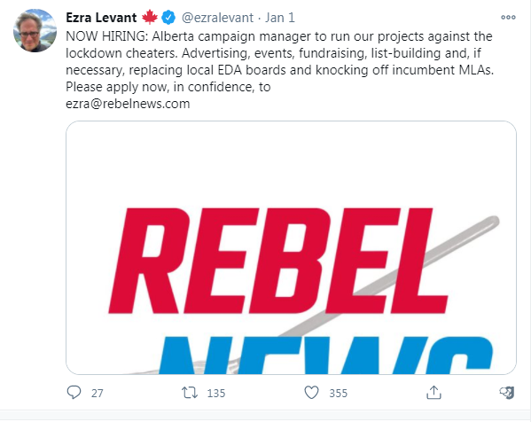

Ezra Levant's New Zionist Project
January 8th, 2021
A goy sent me this on Telegram the day my Graphics Card Exploded. I couldn't get around this until now.

His point was that it would be good for us to get involved in this, because not everyone in there is going to be a zionist shill. In fact, let me quote him.
TDC_ARTICLE_START
Not everyone is gonna be a zionshill. It’s a good opportunity to make connections to rw donors and big players in Alberta.
It’s not about productivity but rather the experience learned and connections you make.
Like literally nobody even knows how to find donors, campaign, or even hold proper rallies in Canada.
TDC_ARTICLE_STOP
I think we could have a great debate going on for this, but to me this sort of feels like "New Idea: let's Infiltrate the GOP!" "Big Players in Alberta," sounds like Donor-Rightists who have zero interest in anything we, or any other peasant actually want.
I do somewhat agree with his latter two points. If one of our goys could get involved with this, I think that would be great. Ezra Levant is a Zionist Jew, so this particular thing isn't going to go anywhere, but getting experience, and seeing how the sausage is made can only be good things. I strongly encourage all of our goys to get involved in this, especially if you're doing it just for the experience.
Ultimately what is needed is our own political entities, such as the NJP.